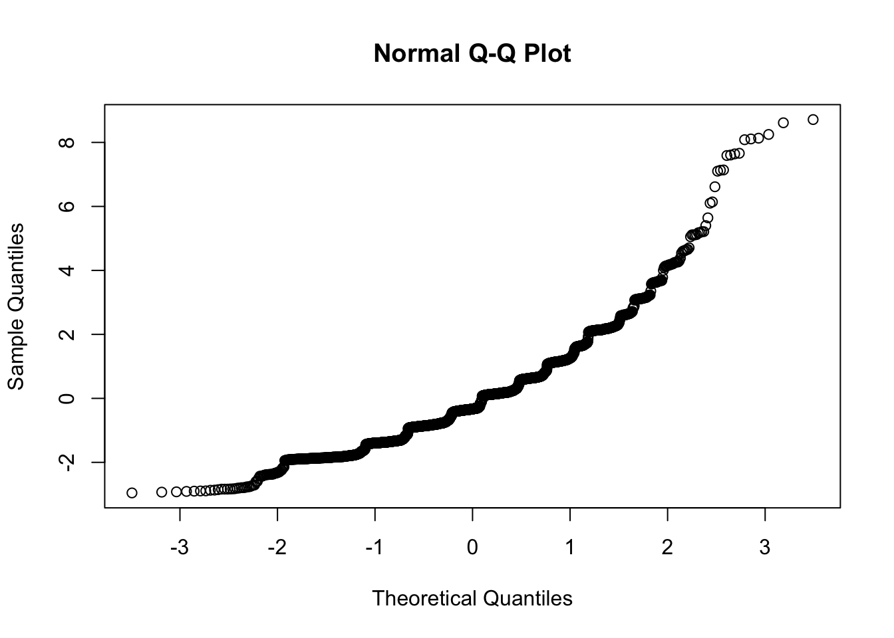
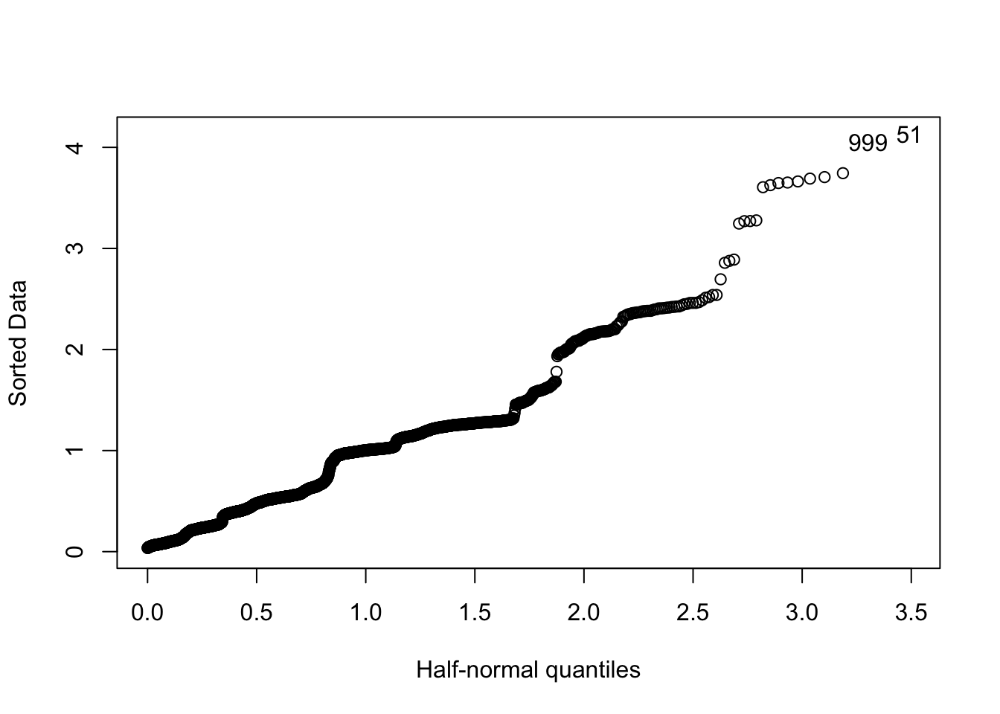

4 Regression with Counts as Outcomes
As a reminder from the text, unlike the log-odds used as the link in logistic regression, the standard “log-linear” model uses the natural logarithm (\(\log (x)\)) as the link function so:
\[ \log{[\hat{\mu}(\textbf{x})]} = \beta_{0}+\beta_{1}x_{1} + \ldots \]
We use the notation \(\hat{\mu}(\textbf{x})\) as the expected value of \(y\) given \(\textbf{x}\)
Interpretation of coefficients:
- Log scale: an increase of 1 unit of \(x_i\) leads to \(\beta_{i}\) increase or decrease in \(\log[\hat{\mu}]\)
- with other variables in the model, this is an adjusted change
- Exponentiated: an increase of 1 unit of \(x_i\) leads to \(e^{\beta_{i}}\) times the number or rate of \(Y\)
- again, this will be an adjusted change in multiple regression
4.1 Example data: PHMC Fruits question
In 2018, the Public Health Management Corporation conducted a home health survey sampling residents of the southeastern PA region (Bucks, Montgomery, Chester, Delaware, and Philadelphia Counties).
One question they asked was:
How many servings of fruits and vegetables do you eat on a typical day?
Responses were recorded as integers: \(y=\{0, \dots, 15\}\)
Here’s a histogram of the responses
d <- foreign::read.spss("https://rickhass.github.io/PHMC_count_tutorial_2.sav?raw=true", to.data.frame = T)
hist(d$FRUITS, breaks = 12, main = "", xlab = "Number of Fruits", ylab = "Freq")
Since we do have a numeric, possibly unbounded count, but not a lot of zeros, we’ll try an ordinary linear model with lm()
We’ll use the following predictors:
- Whether or not the person has insurance
- Their biological sex
- Their BMI
##
## Call:
## lm(formula = FRUITS ~ INSUREDA2 + SEX01 + BMI, data = d)
##
## Residuals:
## Min 1Q Median 3Q Max
## -2.9551 -1.1369 -0.3328 0.6685 8.7147
##
## Coefficients:
## Estimate Std. Error t value Pr(>|t|)
## (Intercept) 2.623202 0.167370 15.673 < 2e-16 ***
## INSUREDA2No -0.222155 0.146952 -1.512 0.1307
## SEX01Female 0.473712 0.071179 6.655 3.61e-11 ***
## BMI -0.009467 0.005611 -1.687 0.0917 .
## ---
## Signif. codes: 0 '***' 0.001 '**' 0.01 '*' 0.05 '.' 0.1 ' ' 1
##
## Residual standard error: 1.598 on 2081 degrees of freedom
## (173 observations deleted due to missingness)
## Multiple R-squared: 0.02356, Adjusted R-squared: 0.02215
## F-statistic: 16.74 on 3 and 2081 DF, p-value: 9.586e-11

As we can see, the residuals are not normally distributed, and their variance is not constant. Perhaps we can do better with a Poisson model.
4.2 Coefficients in Poisson Models
##
## Call:
## glm(formula = FRUITS ~ INSUREDA2 + SEX01 + BMI, family = "poisson",
## data = d)
##
## Coefficients:
## Estimate Std. Error z value Pr(>|z|)
## (Intercept) 0.957420 0.065044 14.720 < 2e-16 ***
## INSUREDA2No -0.088984 0.059421 -1.498 0.1343
## SEX01Female 0.184059 0.028081 6.555 5.58e-11 ***
## BMI -0.003588 0.002175 -1.649 0.0991 .
## ---
## Signif. codes: 0 '***' 0.001 '**' 0.01 '*' 0.05 '.' 0.1 ' ' 1
##
## (Dispersion parameter for poisson family taken to be 1)
##
## Null deviance: 1979.1 on 2084 degrees of freedom
## Residual deviance: 1929.6 on 2081 degrees of freedom
## (173 observations deleted due to missingness)
## AIC: 7525.7
##
## Number of Fisher Scoring iterations: 5
It looks like we may have some outliers, but we’ll proceed with interpreting coefficients before looking into the model fit.
4.2.1 Exponentiated Coefficients Interpretation
A good source for interpretation of Poisson coefficients is here: https://stats.idre.ucla.edu/r/dae/poisson-regression/
- When we exponentiate, we get incidence rates, which are essentially expected counts.
Let’s look at the indicator for
Female: the raw coefficient is \(\hat{\beta} = 0.184\) meaning that, on average, females eat 0.184 more log fruits compared with males.
Let’s compare with the exponentiated coefficient: the IRR
## (Intercept) INSUREDA2No SEX01Female BMI
## 2.6049669 0.9148600 1.2020871 0.9964187So \(e^{\beta} = 1.202\) meaning that females eat about \(20\%\) more fruit on average. Or that the number of fruits consumed by the average female is \(1.20\) times that eaten by males.
As with logistic regression, we can exponentiate the confidence limits to get CI’s for the incidence rate ratios:
## Waiting for profiling to be done...## 2.5 % 97.5 %
## (Intercept) 2.605 2.294 2.960
## INSUREDA2No 0.915 0.813 1.026
## SEX01Female 1.202 1.138 1.270
## BMI 0.996 0.992 1.0014.3 Overdispersion and other count regression models
As we see above, the dispersion parameter is taken to be equal to 1. We can relax that assumption and estimate it using the quasipoisson family.
- The Poisson model assumes that the dispersion parameter, \(\phi\) is equal to 1 in the below equation
\[ Var(y \mid \textbf{x}) = \phi \times V[\mu(\textbf{x})] \]
##
## Call:
## glm(formula = FRUITS ~ INSUREDA2 + SEX01 + BMI, family = quasipoisson,
## data = d)
##
## Coefficients:
## Estimate Std. Error t value Pr(>|t|)
## (Intercept) 0.957420 0.064138 14.928 < 2e-16 ***
## INSUREDA2No -0.088984 0.058593 -1.519 0.1290
## SEX01Female 0.184059 0.027689 6.647 3.8e-11 ***
## BMI -0.003588 0.002145 -1.673 0.0946 .
## ---
## Signif. codes: 0 '***' 0.001 '**' 0.01 '*' 0.05 '.' 0.1 ' ' 1
##
## (Dispersion parameter for quasipoisson family taken to be 0.9723222)
##
## Null deviance: 1979.1 on 2084 degrees of freedom
## Residual deviance: 1929.6 on 2081 degrees of freedom
## (173 observations deleted due to missingness)
## AIC: NA
##
## Number of Fisher Scoring iterations: 5Here, we see that \(\hat{\phi} = 0.972\), so the original fit is likely to be ok. Indeed, we can test it’s fit directly by getting a p-value for the residual deviance of the original model:
with(glm.fruit, cbind(res.deviance = deviance, df = df.residual,
p = pchisq(deviance, df.residual, lower.tail=FALSE)))## res.deviance df p
## [1,] 1929.629 2081 0.99169864.3.1 Overdispersion and Zero-inflation
For an example of overdispersed and zero-inflated data, let’s have a look at a snippet of data collected by Jefferson Health on a number of questions on patients’ health related social needs. To protect PHI, the individual questions are not here, only the number of needs each patient reported (from zero to 8).
## Sex Age race4 SVI4 SumScore
## Female:5910 19-44 :3476 White :6666 1 - Low :3378 Min. :0.0000
## Male :4090 45-64 :3274 BlackAA :1872 2 - Low Medium :2678 1st Qu.:0.0000
## 65-84 :2963 Asian : 600 3 - Medium High:1800 Median :0.0000
## 85 And Over: 287 Other/Unknown: 862 4 - High :1371 Mean :0.2177
## NA's : 773 3rd Qu.:0.0000
## Max. :8.0000
## race3
## Length:10000
## Class :character
## Mode :character
##
##
## ## SumScore
## 0 1 2 3 4 5 6 7 8
## 8786 723 250 109 70 38 13 9 2## [1] 0.2177## [1] 0.5337601
So we can see that \(\text{Var}(Y) > E(Y)\) in this case.
First, let’s look at a negative binomial regression model, this ignores the fact that about \(88\%\) of patients have no needs…
Remember:
- NB regression will often have very similar coefficients to Poisson
- Standard errors will be larger for NB regression, if \(\phi > 1\)
- If overdispersion is the “truth” the SEs for NB regression will be less biased
Interpretation of \(e^{\beta}\) is the same in NB and Poisson regression
We use the glm.nb function from the MASS package. The syntax is the same as before, and we don’t have to specify a family because the function just fits NB models.
library(MASS)
hrsn.nb <- glm.nb(SumScore ~ Sex + Age + SVI4 + race3, data = HRSN.example)
summary(hrsn.nb)##
## Call:
## glm.nb(formula = SumScore ~ Sex + Age + SVI4 + race3, data = HRSN.example,
## init.theta = 0.1689023943, link = log)
##
## Coefficients:
## Estimate Std. Error z value Pr(>|z|)
## (Intercept) -1.22624 0.11726 -10.458 < 2e-16 ***
## SexMale -0.18436 0.07389 -2.495 0.012590 *
## Age45-64 -0.22775 0.08254 -2.759 0.005794 **
## Age65-84 -0.80505 0.09405 -8.560 < 2e-16 ***
## Age85 And Over -0.90897 0.25519 -3.562 0.000368 ***
## SVI42 - Low Medium 0.40764 0.09397 4.338 1.44e-05 ***
## SVI43 - Medium High 0.57892 0.10308 5.616 1.95e-08 ***
## SVI44 - High 0.92585 0.11327 8.174 2.98e-16 ***
## race3Other -0.49160 0.11768 -4.177 2.95e-05 ***
## race3White -0.57691 0.09381 -6.150 7.76e-10 ***
## ---
## Signif. codes: 0 '***' 0.001 '**' 0.01 '*' 0.05 '.' 0.1 ' ' 1
##
## (Dispersion parameter for Negative Binomial(0.1689) family taken to be 1)
##
## Null deviance: 3639.7 on 9226 degrees of freedom
## Residual deviance: 3322.3 on 9217 degrees of freedom
## (773 observations deleted due to missingness)
## AIC: 9155.1
##
## Number of Fisher Scoring iterations: 1
##
##
## Theta: 0.16890
## Std. Err.: 0.00953
##
## 2 x log-likelihood: -9133.06500This suggests there is actually **under*-dispersion. This is not exactly true. The issue is that there are very many more zeros than there ought to be given the model.
4.4 Zero-inflated models
Remember, Zero-inflated models are Mixture Models
- Mixture distribution is built out of combinations of other distributions
In Zero-inflated Models we model separate distributions for “zero v. not zero” and then the counts \(1\) to \(\inf\)
\[ P(Y = 0) \sim Logistic \] \[ P(Y = y_{i}) \sim Count \]
Where “Count” is either Poisson or Negative Binomial
- Technically, each has a “mixture” proportion, but we’ll ignore that
Fitting a Zero-Inflated Negative Binomial (ZINB) model requires the pscl package
## Classes and Methods for R originally developed in the
## Political Science Computational Laboratory
## Department of Political Science
## Stanford University (2002-2015),
## by and under the direction of Simon Jackman.
## hurdle and zeroinfl functions by Achim Zeileis.ZINB.1 <- zeroinfl(SumScore ~ Sex + race3 + SVI4 | SVI4 + Sex,
data = HRSN.example, dist = "negbin")
summary(ZINB.1)##
## Call:
## zeroinfl(formula = SumScore ~ Sex + race3 + SVI4 | SVI4 + Sex, data = HRSN.example, dist = "negbin")
##
## Pearson residuals:
## Min 1Q Median 3Q Max
## -0.4224 -0.3173 -0.2721 -0.2198 17.5424
##
## Count model coefficients (negbin with log link):
## Estimate Std. Error z value Pr(>|z|)
## (Intercept) -0.39269 0.24793 -1.584 0.113230
## SexMale 0.12044 0.10722 1.123 0.261302
## race3Other -0.41252 0.11255 -3.665 0.000247 ***
## race3White -0.58888 0.08957 -6.575 4.88e-11 ***
## SVI42 - Low Medium -0.01276 0.14831 -0.086 0.931425
## SVI43 - Medium High 0.27838 0.15436 1.803 0.071315 .
## SVI44 - High 0.31952 0.15006 2.129 0.033225 *
## Log(theta) -0.64406 0.36460 -1.767 0.077312 .
##
## Zero-inflation model coefficients (binomial with logit link):
## Estimate Std. Error z value Pr(>|z|)
## (Intercept) 0.7370 0.3650 2.019 0.04349 *
## SVI42 - Low Medium -0.6833 0.2101 -3.253 0.00114 **
## SVI43 - Medium High -0.5381 0.1954 -2.754 0.00588 **
## SVI44 - High -1.1535 0.2572 -4.485 7.29e-06 ***
## SexMale 0.4981 0.1602 3.110 0.00187 **
## ---
## Signif. codes: 0 '***' 0.001 '**' 0.01 '*' 0.05 '.' 0.1 ' ' 1
##
## Theta = 0.5252
## Number of iterations in BFGS optimization: 45
## Log-likelihood: -4587 on 13 Df## 2.5 % 97.5 %
## count_(Intercept) 0.6752389 0.4153512 1.0977399
## count_SexMale 1.1279935 0.9142019 1.3917816
## count_race3Other 0.6619785 0.5309322 0.8253701
## count_race3White 0.5549508 0.4656012 0.6614467
## count_SVI42 - Low Medium 0.9873187 0.7382721 1.3203780
## count_SVI43 - Medium High 1.3209873 0.9761330 1.7876738
## count_SVI44 - High 1.3764721 1.0257433 1.8471244
## zero_(Intercept) 2.0896773 1.0217890 4.2736331
## zero_SVI42 - Low Medium 0.5049381 0.3345206 0.7621729
## zero_SVI43 - Medium High 0.5838432 0.3980924 0.8562656
## zero_SVI44 - High 0.3155179 0.1905896 0.5223345
## zero_SexMale 1.6456525 1.2023081 2.2524778The strange part is that the Zero-inflation model is a logistic model for a zero count. So we see that compared to low SVI, those in high SVI neighborhoods had smaller odds of NOT having an needs.
The count part of the model can be interpreted the same way as ordinary Poisson or NB regression:
- log count raw coefficient
- IRR for the exponentiated coefficient